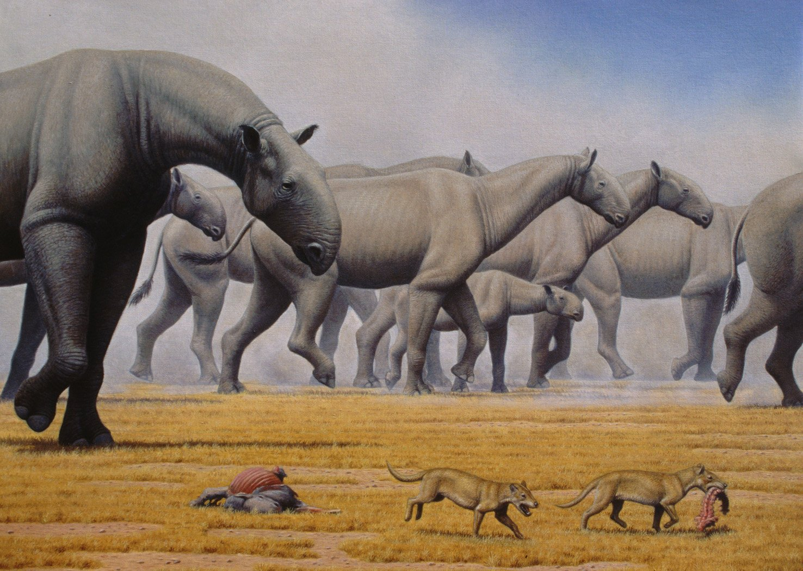

Paraceratherium
Tê Giác Không Sừng thế Tiệm Tân
Tổng quan
Thế
Oligocene
Họ
Hyracodontidae
Chi
Paraceratherium
Dài
8 m
Cao
6 m
Nặng
20 tấn
Thức ăn

Paraceratherium là một chi tê giác không sừng, thuộc phân họ Indricotheriinae của họ Hyracodontidae. Hóa thạch của chúng được tìm thấy ở vùng Đại lục Á Âu nằm giữa Trung Quốc và Nam Tư cũ. Kích thước chính xác của Paraceratherium vẫn là ẩn số vì nhiều phần hóa thạch còn thiếu.
Nguồn: wikipedia.org
Phân bố
Khu vực Đông Âu và Tây Á
Thông tin thêm về Paraceratherium
Kỷ nguyên và phân bố
Paraceratherium được xem là động vật có vú trên cạn lớn nhất mọi thời đại, từng phân bố ở lục địa Á Âu vào thế Tiệm Tân khoảng 34 đến 23 triệu năm trước. Các bằng chứng cổ sinh vật học khác cho thấy loài tê giác khổng lồ này đã di cư từ Cao nguyên Mông Cổ vào Tây Bắc Trung Quốc và Kazakhstan, rồi lan đến Pakistan, hoặc có thể đến Tây Tạng. Trong thời mà nó sinh sống, Tây Tạng là một "miền đất hứa" với rừng rậm dồi dào nguồn sống, giúp chúng có thể tồn tại với thân hình đồ sộ. Đó có thể là nguyên nhân chính của sự di cư.
Tên khoa học
Được đặt tên bởi nhà cổ sinh vật học người Anh Pilgrim năm 1908. Paraceratherium có nghĩa là "gần con thú không sừng" liên quan đến chi tê giác không sừng Aceratherium, mô tả sự tương đồng gần gũi của chúng. Paraceratherium có hồ sơ hóa thạch rất rời rạc và các nhà cổ sinh vật học ban đầu thích đặt tên cho mọi thứ. Kết quả là đã có nhiều tên riêng được đặt cho chi này. Mặc dù Paraceratherium là tên hợp lệ, nhưng đôi khi nó cũng có tên là Indrictotherium, Baluchitherium và những tên khác.
Kích thước
Mặc dù Paraceratherium là loài động vật trên cạn lớn nhất từng sống, nhưng không có phép đo chính xác về kích thước của nó do thiếu mẫu vật hoàn chỉnh. Bất chấp điều đó, chiều dài cơ thể của một Paraceratherium trung bình là khoảng từ 7 đến 8 mét, cao khoảng 5 đến 6 mét, cùng với đó là cân nặng bá đạo của chúng 15 đến 20 tấn, trong khi đó một con voi châu Phi trưởng thành chỉ nặng khoảng 5 tấn, vậy nên một con Paraceratherium trưởng thành có thể nặng bằng 3 đến 4 con voi châu Phi trưởng thành cộng lại.
Ngoại hình
Paraceratherium tuy có thân hình quái dị nhưng các phân tích cho thấy chúng đúng là một loài tê giác khổng lồ không sừng, có cổ dài khoảng 2.5 mét như cổ hươu cao cổ. Chân rất dài và có tư thế hình cột trụ. Hộp sọ của Paraceratherium dài 1,3 mét, tương đối nhỏ so với phần còn lại của cơ thể. Chúng có răng cửa dài, giống ngà cho thấy nó có vòi ngắn.
Chế độ ăn
Những chiếc răng cửa của Paraceratherium là dấu hiệu cho thấy chế độ ăn của chúng là loài ăn thực vật. Paraceratherium ăn chủ yếu lá, cây mềm, và cây bụi. Do lựa chọn môi trường sống và chiều cao của chúng, chúng dễ dàng di chuyển từ cây này sang cây khác, tìm bất kỳ chiếc lá hoặc quả mọng nào chúng muốn. Các nhà khoa học tin rằng Paraceratherium có môi trên hoặc thân cây có thể uốn cong, mà nó có thể dùng để kéo lá từ cành cây cao.
Paraceratherium có lẽ có cách sống giống với voi và tê giác hiện đại. Vì kích thước lớn, nó có rất ít kẻ thù và khả năng sinh sản thấp. Giống như các loài động vật ăn cỏ khác, Paraceratherium có đường tiêu hóa lớn và chúng cũng là loài lên men ruột sau như ngựa và các loài tê giác ngày nay khác. Điều này có nghĩa là chúng phải ăn nhiều thức ăn hơn để tồn tại vì chúng chỉ có thể chiết xuất một lượng tương đối nhỏ chất dinh dưỡng từ thức ăn của mình.
Tập tính sống
Giống như hầu hết các loài tê giác, Paraceratherium sống một mình và chỉ di chuyển theo nhóm khi con cái đi cùng con non. Trong những thời kỳ này, những con đực ở bên chúng như một phương tiện bảo vệ.
Ngoài ra, Paraceratherium có thị lực rất kém. Để bù đắp cho khuyết điểm này, chúng phải có khứu giác và thính giác nhạy bén hơn. Giống như toàn bộ gia đình tê giác, Paraceratherium giao tiếp với nhau thông qua tần số siêu âm, quá thấp để con người có thể nhận được. Tuy nhiên, điều đáng chú ý là mặc dù Paraceratherium giao tiếp thông qua các tần số hạ âm, nhưng chúng cũng giao tiếp bằng cách tạo ra âm thanh với nhau.
Khám phá
Năm 1846, các mảnh hóa thạch của loài Paracertheres khổng lồ này lần đầu tiên được phát hiện tại khu vực Dera Bugti ngày nay là Pakistan. Vào thời điểm đó, những mảnh vỡ này không thể xác định được. Tuy nhiên, ngay sau đó, vào khoảng đầu thế kỷ này, các nhà cổ sinh vật học người Anh bao gồm Pilgrim và sau đó là Forester Cooper đã khám phá khu vực Dera Bugti và tìm thấy các lớp xương của Paraceratherids. Khu vực này là nơi bắt nguồn của chi và loài hợp lệ Paraceratherium Bugtiense.
Cũng trong khoảng thời gian đó, vào đầu những năm 1900, các nhà cổ sinh vật học người Nga ở Kazakhstan cũng tìm thấy các hóa thạch của Paracerathere, trong đó có một bộ xương gần như hoàn chỉnh được đặt tên là Indricotherium transouralicum (nay là Paraceratherium transouralicum). Ngày nay, di tích của Paracerathere vẫn đang được tìm thấy ở Mông Cổ, Kazahkstan và Pakistan, cũng như các địa điểm khác trên khắp châu Á.